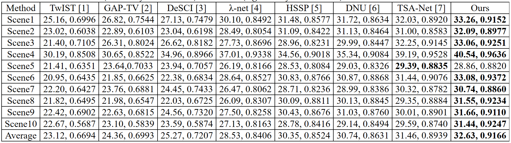
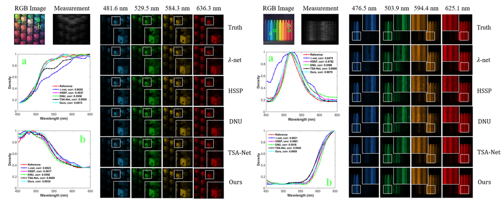
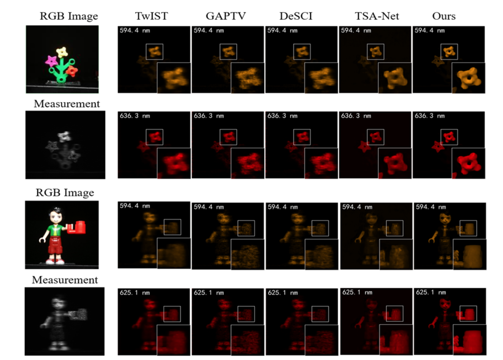

Abstract
In coded aperture snapshot spectral imaging (CASSI) system, the real-world hyperspectral image (HSI) can be reconstructed from the captured compressive image in a snapshot. Model-based HSI reconstruction methods employed hand-crafted priors to solve the reconstruction problem, but most of which achieved limited success due to the poor representation capability of these hand-crafted priors. Deep learning based methods learning the mappings between the compressive images and the HSIs directly achieved much better results. Yet, it is nontrivial to design a powerful deep network heuristically for achieving satisfied results. In this paper, we propose a novel HSI reconstruction method based on the Maximum a Posterior (MAP) estimation framework using learned Gaussian Scale Mixture (GSM) prior. Different from existing GSM models using hand-crafted scale priors (e.g., the Jeffrey’s prior), we propose to learn the scale prior through a deep convolutional neural network (DCNN). Furthermore, we also propose to estimate the local means of the GSM models by the DCNN. All the parameters of the MAP estimation algorithm and the DCNN parameters are jointly optimized through end-to-end training. Extensive experimental results on both synthetic and real datasets demonstrate that the proposed method outperforms existing state-of-the-art methods.
Paper & Code & Demo
Experimental Results
Table 1. The PSNR in dB (left entry in each cell) and SSIM (right entry in each cell) results of the test methods on 10 scenes.
Figure 2. Reconstructed images of Scene 2 (left) and Scene 9 (right) with 4 out of 28 spectral channels by the five deep learning-based methods. Two regions in each scene are selected for analysing the spectra of the reconstructed results.
Result Visualization
Figure 3. Reconstructed images of two real scenes (Scene 1 and Scene 3) with 2 out of 28 spectral channels by the competing methods.
Citation
@inproceedings{huang2021deep,
title={Deep Gaussian Scale Mixture Prior for Spectral Compressive Imaging},
author={Huang, Tao and Dong, WeiSheng and Yuan, Xin and Wu, Jinjian and Shi, Guangming},
booktitle={IEEE Conference on Computer Vision and Pattern Recognition},
year={2021}
}
Concat
Tao Huang, Email: thuang_666@stu.xidian.edu.cn
Weisheng Dong, Email: wsdong@mail.xidian.edu.cn
Xin Yuan, Email: xyuan@bell-labs.com
Jinjian Wu, Email: jinjian.wu@mail.xidian.edu.cn
Guangming Shi, Email: gmshi@xidian.edu.cn